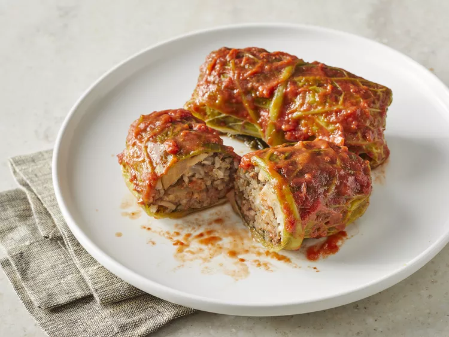

Cabbage Rolls

About
This is a family recipe for cabbage rolls that goes back more than 80 years. I have made modifications to this
recipe to enhance the taste and flavor. These cabbage rolls freeze well.
Ingredients
- 2 cups uncooked long-grain rice
- 4 cups water
- 2 large heads savoy cabbage
- 1 cup water
- 2 onions, chopped
- 3 tablespoons butter
- ¾ cup uncooked long-grain rice
- 1 pound extra-lean ground beef
- ½ pound pork sausage
- 4 cloves garlic, minced
- 2 teaspoons dried dill weed
- ¾ teaspoon salt
- ½ teaspoon ground black pepper
- ½ teaspoon white sugar
- 1 (28 ounce) can whole peeled tomatoes, with liquid
- 1 (26 ounce) can condensed tomato soup
- 8 bay leaves
Steps
-
Wash rice thoroughly. Combine rice with 4 cups water in a medium saucepan; bring to a boil. Reduce heat,
cover, and simmer until all of the water is absorbed, about 20 minutes.
- Meanwhile, remove cabbage cores using a thin, long knife.
-
Place one cabbage in a microwave-proof container with the cored part facing down. Pour 1/2 cup water into
the container, cover, and microwave on high for 10 minutes.
-
Carefully turn cabbage over, and cook, covered, for an additional 10 minutes. Let cabbage sit until it is
cool enough to handle, then separate leaves carefully and remove any tough ribs. Cook the second cabbage in
the same manner.
-
Sauté 1/2 of the onions in 3 tablespoons butter; cook just until translucent (do not brown). Combine the
cooked and uncooked rice, cooked and uncooked onions, ground beef, pork sausage, garlic, dill weed, salt,
black pepper, and sugar in a large mixing bowl. Mix until incorporated.
-
Spoon about 2 tablespoons of mixture onto each cabbage leaf. Bring one end of the cabbage leaf over the
mixture, rolling and tucking in the ends to prevent the filling from falling out.
-
Preheat the oven to 350 degrees F (175 degrees C).
-
Place leftover cabbage leaves on the bottoms of two 9x13-inch casserole dishes. Arrange cabbage rolls in a
single layer so they are tight against each other.
-
Purée tomatoes and condensed tomato soup in a food processor or blender. Pour tomato mixture over the
cabbage rolls until just covered. Place 4 bay leaves on top of sauce in each dish. Cover each dish tightly
with foil.
-
Bake in the preheated oven for 2 hours. Remove from the oven and let cool for 15 minutes before removing the
foil. Serve hot.